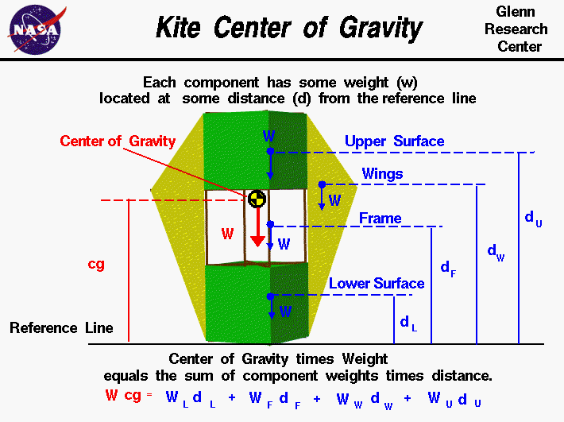

|

The flight characteristics of a
kite
depend on the relative size of the
forces
which act on the kite and
where
those forces act on the kite.
The forces include the aerodynamic
lift, and
drag
which act through the
center of pressure,
the tension in the
control line
which acts through the
bridle point,
and the
weight
which acts through the center of gravity.
We can predict the performance of a kite design if we can calculate all
of these forces and locations.
The center of gravity is the average location of the weight
of the kite.
To determine the
stability
and
trim
of the kite we need to be concerned with
the total weight and the location
of the center of gravity because the weight acts through the center of gravity.
How would you determine the location of the
center of gravity during design?
Calculating cg
You can calculate the center of gravity. But in general, this is a
complicated procedure requiring the use of calculus. This figure
shows a simplified version of the center of gravity calculation that
you can use. We assume that we already know the weight
and location, relative to some reference location, of each of the
major
parts
of the kite including the frame and the surface covering.
The total weight W of the kite is simply
the sum of the weight of the surface covering
Ws and
the frame Wf.
W = Ws + Wf
Since the center of gravity cg is an average
location of the weight, we can say that the weight of the whole
kite times the location of the center of gravity is equal to the
sum of the weight w of each part times the distance d of that
part from the reference location. This is equivalent to saying
the center of gravity is the mass-weighted average of the part
locations. On this page we show a winged box kite and the parts
include the upper surface u, the lower surface l,
both wings wn and the frame f. For
a different design the number and location of the parts would be different.
For the winged box kite, the weight times the center of gravity is equal
to the weight of the upper surface times the distance of the upper surface,
plus the weight of lower surface times the distance to the lower
surface plus the weight of the frame times the distance to the frame plus
the weight of the wings times the distance to the wing:
W * cg = (w * d)u + (w * d)l + (w * d)f + (w * d)wn
You can use the
KiteModeler
computer program to calculate values for the center of gravity of your design.
Select "Design" mode and change the geometry of your kite using input sliders.
The program calculates the center of gravity using the equation listed above
and displays the output results.
Component cg Location
On the page, we show the weight and distance of the parts
relative to the reference line. The location of
the reference line is arbitrary. The distance could be measured from
the top of the kite
instead of from the base of the kite as shown in the figure
but we have to remember where it is. The cg is a distance measured from
the reference line as well.
The "distance" of the upper surface du is the distance of the
center of gravity of the upper surface relative to the reference line.
So we have to
be able to calculate or determine the center of gravity of the upper surface
and each of the other kite parts.
For simple shapes, finding the cg, or average location
of the weight, is quite simple. For example,
the upper surface is a rectangle. The center of gravity is
halfway between the top and bottom of the upper surface. For a triangle it
is 1/3 of the distance from the side. There is a
technique
for determining the center of gravity of any general shape.
Determining cg Mechanically
Once we have built a kite, there is a simple mechanical way to determine
the center of gravity for each component or for the entire
kite:
- If we just balance the component, or the entire kite, using
a string or an edge, the point at which the component, or kite,
is balanced is the center of gravity. This is just like balancing a
pencil on your finger!
- Another, more complicated way, is to hang the kite from some
point, the corner of a wing, for example, and drop a weighted
string from the same point. Draw a line on the kite along the
string. Repeat the procedure from another point on the kite, the
lower surface, for example. You now have two lines drawn on the kite.
The center of gravity is the point where the lines intersect. This
procedure works well for irregularly shaped objects that are hard
to balance.
Activities:
Guided Tours
Navigation ..


- Beginner's Guide Home Page
|